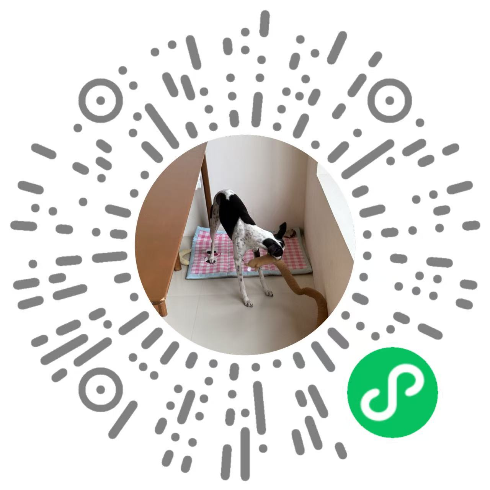

Programming Languages Lab · Peking University
Duan Bingjie
D.Eng Student · Class of 2025
I am a D.Eng student in the Programming Languages Lab at Peking University, advised by Prof. Hu Zhenjiang. My academic homepage is just getting started, but I am excited to grow it into something much more substantial in the coming years.
Affiliations
- Programming Languages Lab
- Software Engineering Institute
- School of Computer Science
- Peking University
Contact
- Email bjduan25@stu.pku.edu.cn
- Office Beijing Daxing District, Jinyuan Road,
School of Software and Microelectronics, PKU
More about me
I capture people's stories through portrait photography.
See my work—scan the QR code on WeChat!

I always seeking thrills! Rock climbing and music are what truly excite me.